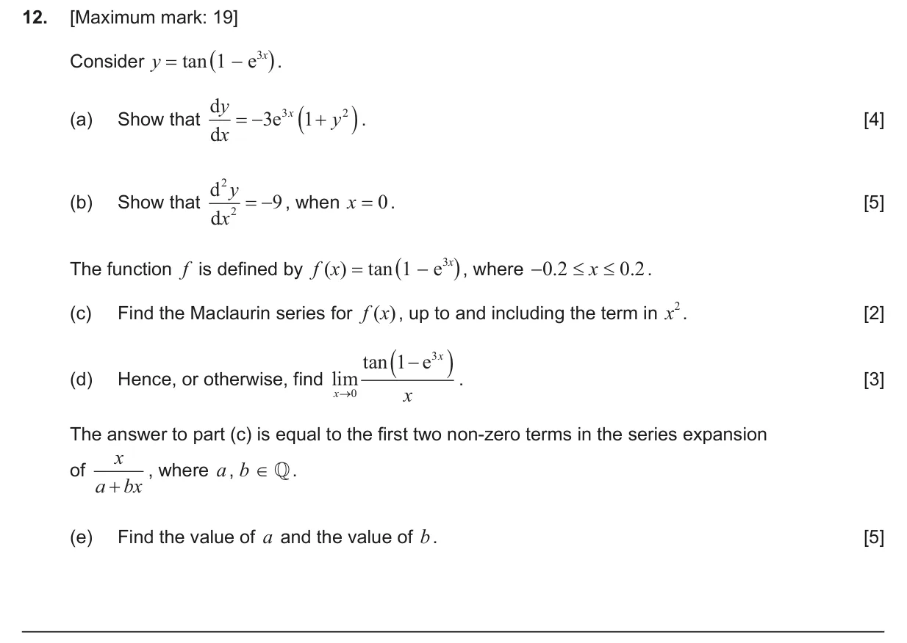
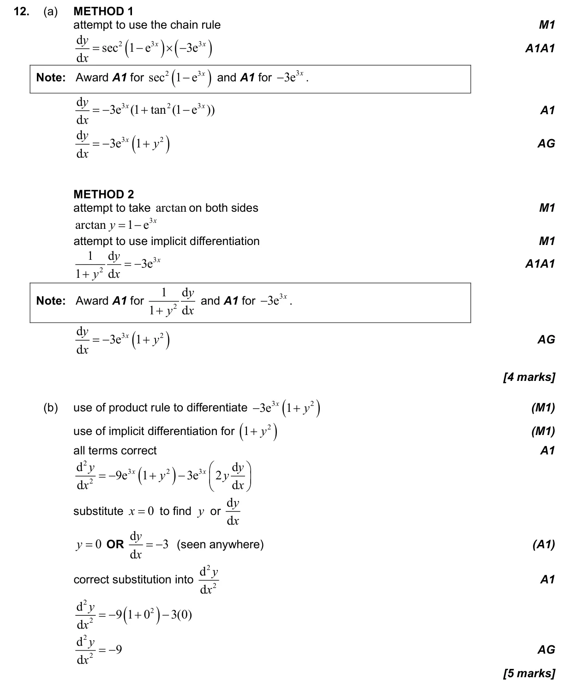
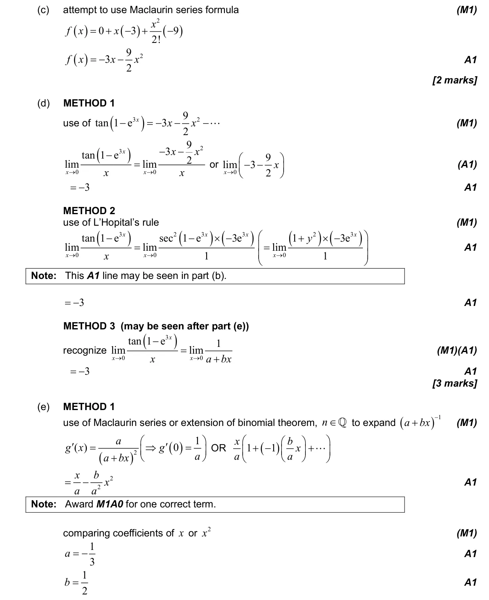
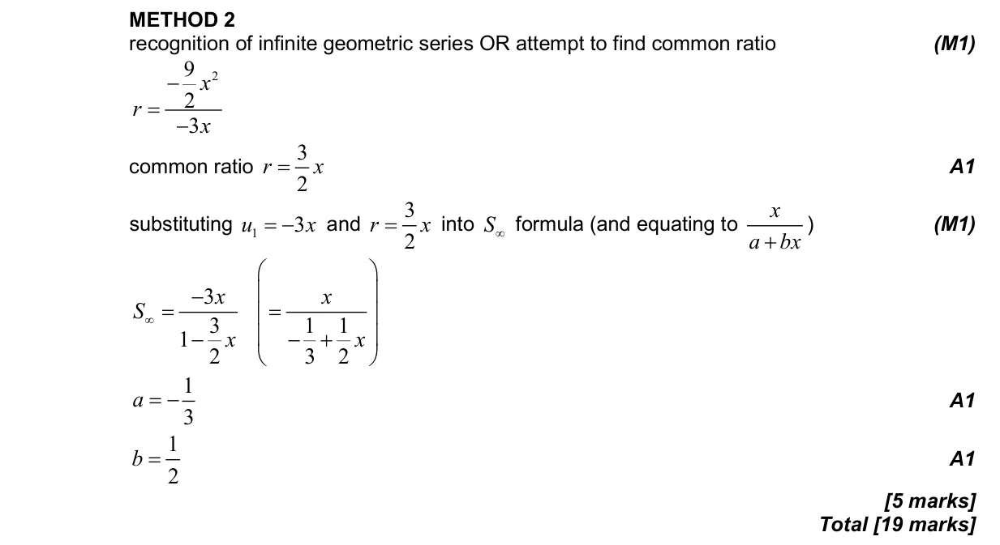

1.10 Counting principles and the binomial theorem for rational indices5.13 Limits by l'Hôpital's rule or Maclaurin series5.14 Implicit differentiation, related rates of change and optimisation5.6 Differentiating polynomials n in Q, chain, product and quotient rules5.15 Further standard derivatives and integrals3.9 Reciprocal trigonometric ratios, Pythagorean identities and inverse trigonometric functions5.19 Maclaurin series
Question

Markscheme


